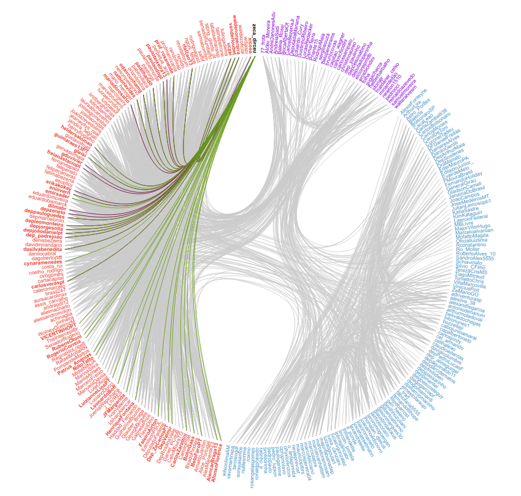
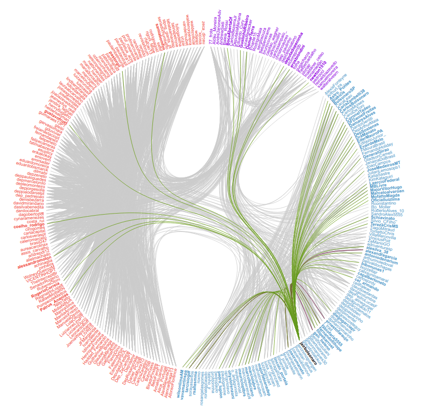
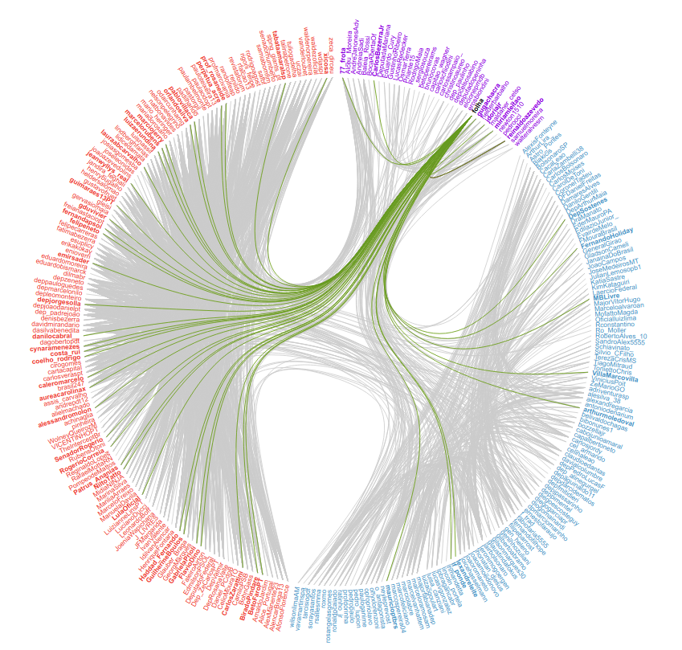
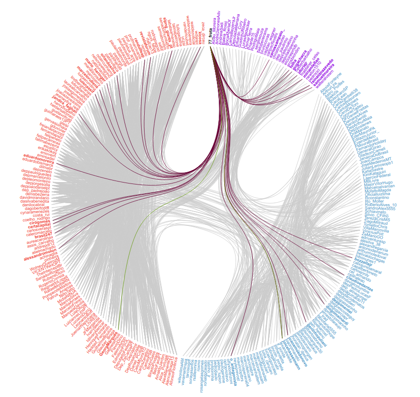

Polarização na Política Brasileira: 2018 - 2021
O presente trabalho busca explorar através de visualização de dados como os agentes políticos têm se polarizado no espectro político direita-esquerda. Para tanto, exploramos três eixos temáticos,
- 1. Análise das eleições de 2018.
- 2. Análise das bancadas da câmara dos deputados, por partido e ideologia.
- 3. Análise do comportamento de agentes políticos nas redes sociais.
1. Eleições Presidenciais de 2018
Nesta seção, analisamos a votação ocorrida no segundo turno das eleições presidenciais de 2018. Os dados foram obtidos à partir de [1], por município, e foram agrupados por estado da federação, incluindo votos no exterior (sigla "zz"). O cenário político de 2018 foi bastante turbulento, e diversos fatores convergiram para a polarização política que culminou na eleição do atual presidente Jair Bolsonaro (sem partido). Entre estes, ressaltamos os seguintes,
- 1. Atuação de um susposto Gabinete do Ódio para a disseminação de fake news em favor do então candidato Jair Bolsonaro [2], [3],
- 2. Um cansaço generalizado de boa parte da população brasileira com a proposta política, e com a ideologia representada pelo Partido dos Trabalhadores (PT) [4].
Votação para Presidente por Estado Brasileiro
Percentual de votos por Estado
5 Municípios com mais votos
2. Análise da ideologia dos deputados em 2020
3. Comportamento de Agentes Políticos nas Redes Sociais
Procuramos fazer uma análise do comportamento que diversos agentes políticos apresentam na rede social Twitter. O foco da nossa visualização está na interação entre usuários. Para visualizar essas interações, nós vamos considerar o ato de retweet como uma conexão entre dois usuários. Portanto, nós agrupamos usuários de mesma ideologia política. Note que a definição da ideologia política dos usuários pesquisados segue a ideologia partidária levantada em [1], bem como a análise feita por [2]. Incluímos uma conexão entre personalidades que se reuitaram. Isso nos permite verificar: (i) se os retuites seguem a ideologia política dos agentes políticos, (ii) quais usuários conseguem se comunicar com diferentes ideologias políticas.
I. Ideologia Política e Retuites
Ao analisarmos os perfis, notamos que usuários à esquerda tendem a retuitar usuários de esquerda, assim como os usuários de direita tendem a retuitar usuários de direita. Exemplos notórios são os perfis do deputado Zeca Dirceu (@zeca_dirceu) e do presidente Jair Bolsonaro (@jairbolsonaro). Enquanto o primeiro só se comunica com usuários de esquerda (portanto, de sua mesma ideologia política), o segundo consegue ainda se comunicar com todo o espectro político, apesar da predominância entre usuários de direita.
Conexões de @zeca_dirceu
Conexões de @jairbolsonaro
O mesmo não se verifica para usuários de centro. Por exemplo, veículos de informação tem uma maior comunicabilidade entre todo o espectro político, como pode ser visto abaixo nas conexões do perfil @folha, ou mesmo nomes de centro-direita como o perfil @77_frota. Isso reforça dois pontos-chave: (i) a imparcialidade de veículos de imprensa e de jornalistas, e (ii) o fato de que agentes políticos menos radicais tendem a se comunicar com os dois lados do espectro político.
Conexões de @folha
Conexões de @77_frota
Os usuários apresentados anteriormente, bem como outros perfis analisados podem ser explorados na visualização abaixo.
II. Visualização Iterativa
Grafo de Retweets
Ideologia de quem retuitou
Ideologia dos retuitados por
Referências Bibliográficas
[1] Gazeta do Povo. Mapa eleitoral de presidente por municípios no 2º turno, 2018 Acessado em: 19/02/2021.[2] Veja. CPI das Fake News convoca ‘gabinete do ódio’ de Bolsonaro , 2019 Acessado em 04/04/2021
[3] Carlos Graieb. O Gabinete do Ódio Existe. Ponto Final, 2020 Acessado em: 04/04/2021
[4] Patricia Faching e Ricardo Machado. Eleições 2018. A radicalização da polarização política no Brasil. Algumas análises. Entrevistas especiais
[5] Estadão. Nordeste se Mantém como "Cinturão da esquerda", 2018 Acessado em: 04/04/2021
[6] Syvio Sardinha, Edson e Costa. Direita cresce e engole o centro no congresso mais fragmentado da historia, 2019. Acessado em: 19/02/2021.
[7] Daniel Mariani, Fábio Takahashi. GPS Ideológico, 2019 Acessado em: 19/02/2021.